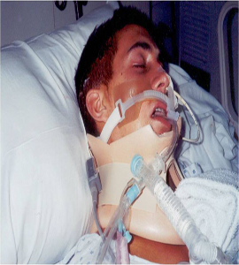

Chris Memoli!!
July 6, 2002..
***The Struggle Never Ends***
What I Do
On July 6, 2002, at the age of 17 I was involved in a terrible car accident that has altered my life forever. I suffer from Traumatic Brain Injury and have undergone rehabilitation for many years to learn to use my hands and learn to walk again. I never regained my speech back.n conjunction with my family, I created a 45 minute presentation that is meant to send a strong message to youths entering the driving age.
The fact that I am sitting here and am able to share my story after such a tragic event is truly a blessing. Growing up, I was the typical trouble-making teenager that lived in the fast lane. I lost my Dad from Brain Cancer in 1999, two years prior to the accident and I was angry at the world. Nothing really mattered to me in life, and I had no dreams or plans for my future. I lived my life day to day. I was supposed to be going to school, but I was expelled for most of high school. I was cutting class if I was not already kicked out or suspended.
The night before the accident, I went to a keg party. My friends and I partied all night. Early the next morning, we decided to go for some bagels. A couple of my friends jumped in one car and I hopped in a car with a girl I had met the night before. As we were driving, the girl lost control and the car flipped into a ditch. I was NOT wearing a seatbelt so I flipped around like a beach ball. When the paramedics arrived they had to intubate me. This means that they had to place a flexible plastic tube down my windpipe in order to maintain an open airway for me to breathe. This moment was the beginning of a very long, tough road for me and my family. My life was changed forever.
The doctors told my Mom that I would probably never walk or even be the same person because of the Traumatic Brain Injury. I had spent over a year in the hospital going to physical, speech, and occupational therapy. While in the hospital I was tutored so that I was able to graduate high school with my class. After I was able to live home I continued to go for therapy for over two years. I had gone to Suffolk Community College and earned my Associates degree from 2005-2008. When completed I decided that I wanted to go away to college to live on campus, so I moved upstate to Pace University in Westchester and graduated with a bachelors degree in Technology Systems. It has taken a lot of determination and hard work to get where I am today. This does not count all of the surgeries that I had to have.I am presently living in Manhattan on my own going to Pace University and going for my Masters degree in Computer Science. Going out and telling my story is very important to me for I feel that no one should have to go through what I went through, and if I can prevent just ONE person from making the same mistake, well then I did a great job, I can say that I saved someones life.
A 10 minute joy ride change your life forever!!!
Contact Information
News Article links: